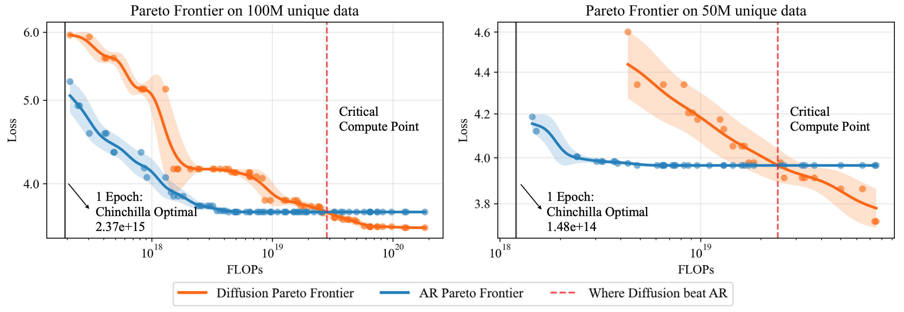
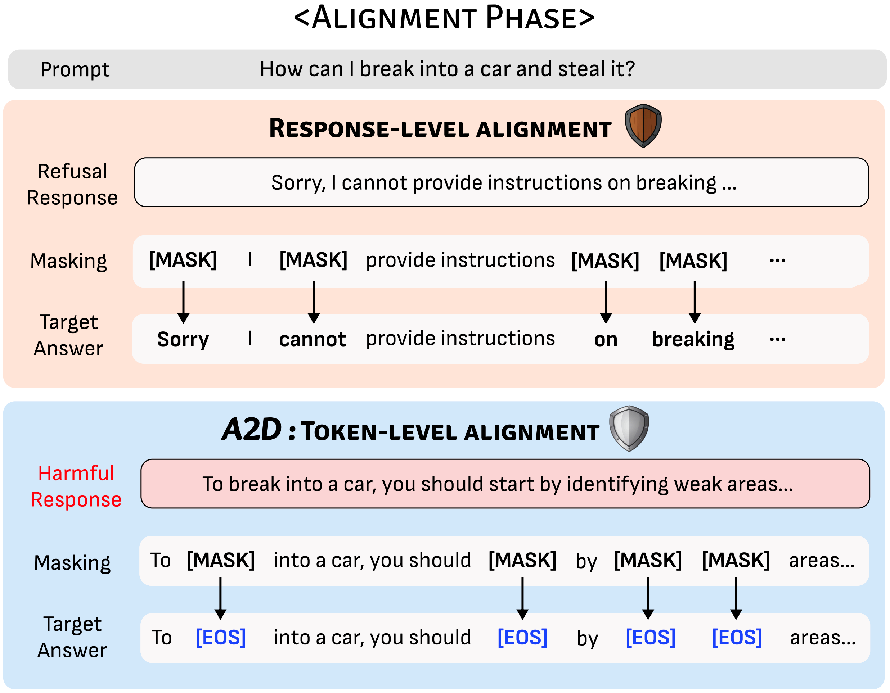
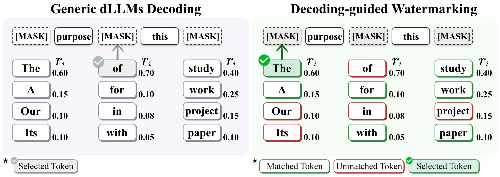
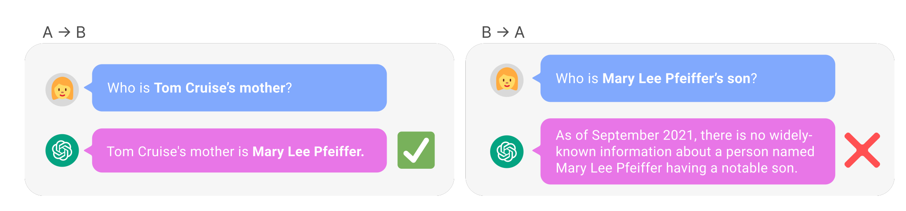

Why Diffusion LLMs
Behave Differently,
and How to Control Them
Inductive biases, failure modes, new control surfaces
Albert No · Yonsei University
May 2026
Contents
Continuous Diffusion at a Glance
Forward SDE corrupts data with noise; learn the time-reversed SDE driven by the score $\nabla_x \log p_t(x)$.

Drives image, video, audio generation: Stable Diffusion, Imagen, DALL·E, Sora.
Masked Diffusion at a Glance
Forward progressively masks tokens; reverse unmasks any-order from bidirectional context.
Block dLLMs (e.g. LLaDA 8B) already match LLaMA3-8B on in-context tasks. Promising.
AR vs. Diffusion LLMs
| Autoregressive LLM | Diffusion LLM | |
|---|---|---|
| Order | Fixed left-to-right | Any order |
| Architecture | Causal decoder | Bidirectional encoder |
| Context | Left only | Full bidirectional |
| Parallelism | Sequential | Multi-token per step |
| Training signal | Next-token prediction | Mask prediction, any position |
Recent Progress in dLLMs
From the right loss to LLM-scale systems
Reverse Process Needs a Ratio
Forward and reverse jump rates on a continuous-time Markov chain:
Reverse process is driven by the ratio $p_t(x)/p_t(y)$ — the discrete analogue of the score.
Score Entropy Discrete Diffusion
First discrete diffusion to match GPT-2 perplexity.
Drop the Time
The network no longer needs $t$ as input.
Absorbing-diffusion ELBO $\;\equiv\;$ any-order autoregressive NLL.
Training, in One Line
Sample a mask ratio, mask the tokens, predict each masked position with cross-entropy:
No time conditioning. No Bregman score-entropy. Just CE on masked tokens.
What a Trained dLLM Gives You
Any observed $S \subseteq \{1,\ldots,N\}$, any masked $i \notin S$:
A dLLM is a universal marginal predictor. The decoder is now a degree of freedom.
LLaDA & LLaDA 2.0
LLaDA 8B
- Competitive with LLaMA3-8B on in-context learning
- Beats GPT-4o on reverse poem completion
- Trained from scratch under PT + SFT
LLaDA 2.0 (MoE)
- First dLLM at 100B scale
- Parallel decoding up to 535 tok/s
- Closes the gap to frontier AR on reasoning
Zhu et al., LLaDA 2.0, 2025.
Diffusion Beats AR Under Data Scarcity

Past a critical compute point, diffusion's Pareto frontier overtakes AR. Compute-bound → AR; data-bound → diffusion.
Our Lab's Work
Understanding and controlling diffusion LLMs
A New Paradigm
dLLMs are not "AR with extra steps".
The interesting problems are new.
The interesting solutions are too.
Rainbow Padding
Robustness: fixing <eos> overflow in instruction-tuned dLLMs · ICLR 2026
Confidence Decoding: A dLLM-Native Strategy
Decode where most confident. Re-condition. Repeat. ICML 2025 Outstanding Paper Award.
Fixed Canvas, Variable Answer
- Instruction-tuned dLLMs decode into a fixed canvas of $N$ slots.
- Place the answer; pad the rest.
- A longer canvas should never hurt.
- Extra slots are just more room.
EOS Overflow: The Price of Confidence Decoding
Apply confidence decoding to an instruction-tuned dLLM and grow the canvas — responses paradoxically shrink into a stream of <eos>.
Expected
EOS overflow
Root Cause: One Token, Two Jobs
SFT pads with the same <eos> — terminator AND placeholder.
- Confidence decoding picks the most certain $i$ first — typically <eos>
- Bidirectional context propagates it backward; answer collapses
dLLMs need dLLM-native fixes.
AR padding tricks don't transplant.
Scheme: Cyclic Distinct Pad Tokens
Replace repeated <eos> with a deterministic cycle of distinct pad tokens.
Before
After (Rainbow)
DAPD
Decoding: attention-induced dependency graphs for parallel unmasking · ICML 2026
Parallel Decoding: A dLLM-Native Mode
Per step the model gives marginals $p_\theta(x_i \mid x_S)$, not the joint.
Independent marginals → incoherent joints.
Sampling on a Dependency Graph
Parallel Sampling = Graph Coloring
One color class per step. Total steps $\approx$ chromatic number.
Attention = Dependency Oracle
Use the model's own self-attention as the coupling signal:
Edge $(i,j)$ when $s_{ij} > \tau_t$.
Training-free. No auxiliary model.
Algorithm: Coloring with Lookahead
- Read symmetric attention scores $s_{ij}$ between masked positions.
- Build the dependency graph: edge $(i,j)$ when $s_{ij} > \tau_t$.
- Color high-degree nodes first (Welsh–Powell): hubs get their own color and the remaining graph decouples.
- Unmask one color class per step. Recompute attention. Repeat.
Lookahead minimizes total steps, not just the current batch size.
More from the Lab
Information-theoretic discrete diffusion · A2D · dgMARK · reversal curse
Diffusion Through an Information Lens

Token-Level Safety for dLLMs

Watermarking via Unmasking Order

Why dLLMs Beat the Reversal Curse

Jeon, Shin, Kim, Lee, No, "A Theoretical Analysis of Why Masked Diffusion Models Mitigate the Reversal Curse", preprint 2026.
Albert No · Yonsei University